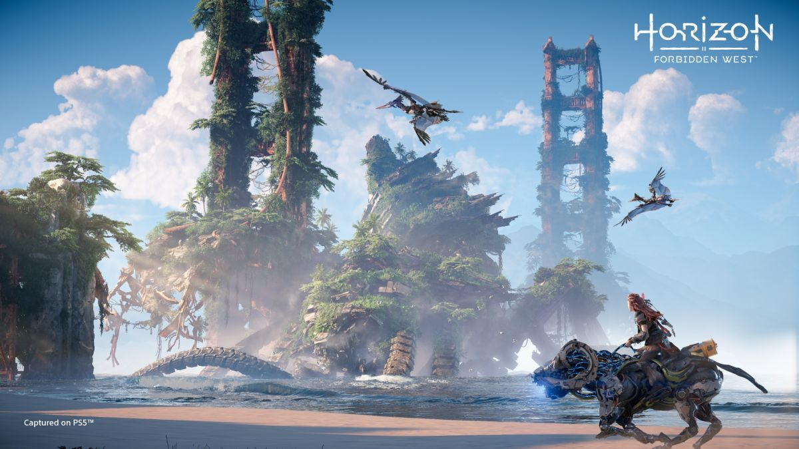

Read what's new in video games here on this page, with the newest games, the most recent screenshots and much more.
Recently Updated
With the recent release of Horizon Forbidden West, fans are raving about it. The game has been praised by both fans and critics alike, and I think we're seeing a potential contender for the GOTY Award. With stunning visuals and amazing graphics, the game is one of many released for the PS5, using the consoles capability for stunning graphics and gameplay to the max. The game looks stunning and reports say it plays well, I have yet to try the game myself but after playing Horizon Zero Dawn, I have the strong feeling I'll enjoy this one as well.
The game once again follows our protagonist Aloy, who we all know and love from the first game, and follows her following the events after the first game. It is set in a new area of a post- apocalyptic world, named the Forbidden West. Here she encounters new enemies, mechanical and human, as well as new regions containing ravaneous storms and conflicts between new tribes. She also encounters new ecosystems and new environments with a vast new map for the player to explore and experience.
Horizon Forbidden West, seems to have a lot to offer in comparison to it's predecessor but only time and plenty of gaming will tell if it will continue to hold up or if it has a chance at winning the Game Of The Year Award.
Newest Screenshot
My Most Recent Game
I recently played Back 4 Blood with a group of friends and although difficult in some parts, the game can be quite enjoyable. There is much more fun to be had when playing with friends than on your own. There do seem to be a few glitches but overall the game is fun to play with simple controls and mechanics, with effective and good-looking graphics. The game has an intersting card mechanic where you pull cards in order to get certain power ups, for example, more damage or more health, which is an effective and interesting mechanic with in higher levels being able to pick about 20-30, or possibly even more cards with good or even better power ups. The campaign could be a bit longer with more variations but overall 8/10 would recomend.

My Top 5 Games
1. The Elder Scrolls V: Skyrim
2. Infamous: second Son
3. Animal Crossing: Wild World
4. Cyberpunk 2077
5. Assassin's Creed: Syndicate